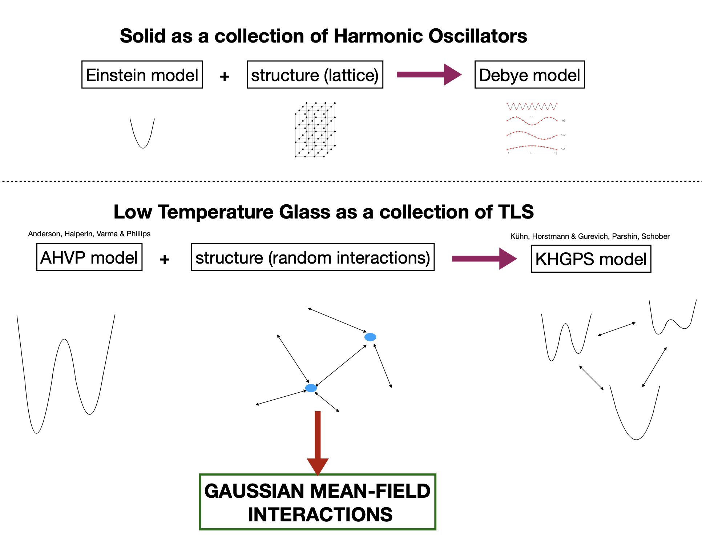

This project focuses on the study of low-temperature glass phases and the exploration of soft anharmonic spin glasses. We uncover connections between linear excitations and non-linear two-level systems, which contribute to the understanding of low-temperature anomalies in glasses.
